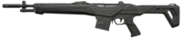

Bulldog
The Bulldog is a moderately-priced rifle. It has two firing modes, a standard automatic single-bullet primary fire and a semi-automatic burst-mode alternate fire that fires three bullets in an accurate burst at around a fifth of its usual fire rate.
|
Damage
|
| 0 - 50m |
| Head - 115 |
| Body - 35 |
| Leg - 29 |

Guardian
The Guardian is a moderately-priced semi-automatic rifle. It is most effective in long-range fights in the hands of players who are confident in their ability to hit headshots at such distances, being more accurate than a Vandal. The Guardian's high penetration also makes it useful for getting wallbang kills. In short to medium range fights however, the Guardian cannot compete with the Phantom or Vandal due to their higher rates of fire.
|
Damage
|
| 0 - 50m |
| Head - 195 |
| Body - 65 |
| Leg - 49 |

Phantom
The Phantom is a high-cost automatic rifle. One of VALORANT's best general-purpose weapons, it is most effective at short to medium range where it is able to spray down multiple enemies at once due to its high rate of fire. It also comes equipped with a silencer, allowing it to be used to spam through vision blockers without much risk to the player's ammo count or positioning.
|
Damage
|
| 0 - 15m |
15 - 30m |
| Head - 156 |
Head - 140 |
| Body - 39 |
Body - 35 |
| Leg - 33 |
Leg - 29 |

Vandal
The Vandal is a high-cost automatic rifle. One of VALORANT's best general-purpose weapons, it is most effective at picking off individual targets at longer ranges due to having no falloff, allowing it to kill any enemy with a single headshot at all ranges.
|
Damage
|
| 0 - 50m |
| Head - 160 |
| Body - 40 |
| Leg - 34 |